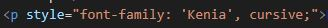

Fonte do Google linkada sem baixar
Index
Votar
Como usar uma fonte que está no Google Fonts sem ter que baixar.
- Acesse o site Fonts.google.com
- Faça uma busca pelo nome da fonte ou filtre e escolha uma fonte clicando sobre o cartão.
- Clic sobre o select:

- Repita os passos anteriores para mais fontes
- Abra a caixa de códigos: Uma janela à direita abrirá
- Copiar o código da tag Style:
- No código HTML, colar o código abaixo da tag Title
- Na janela do Googe fonts, copie a linha da 'Font-Family' desejada (Estão todas as selecionadas:
- No HTML, dentro da tag P, H etc, digite STYLE > ctrl 
Pode ser outra tag
- Ou pode por tag Style dentro da tag Head